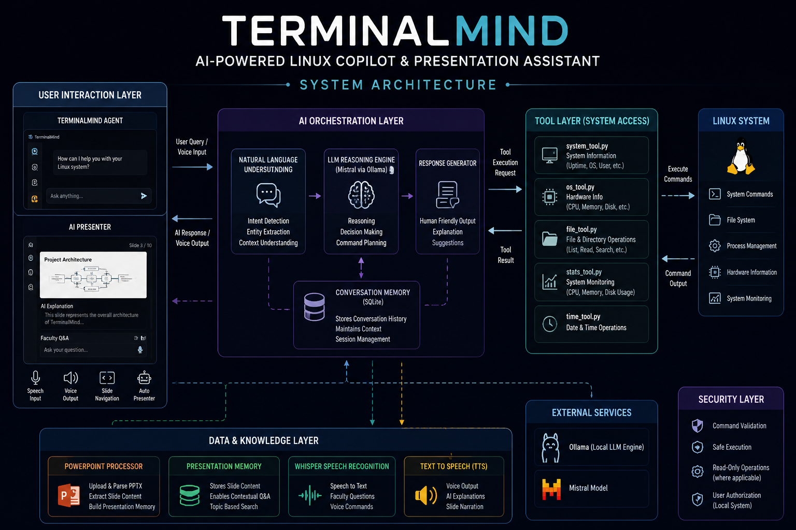
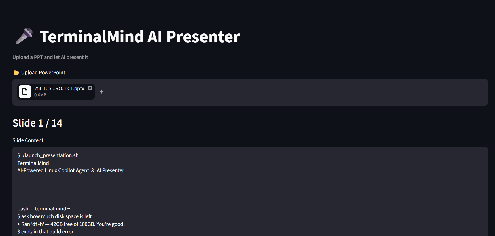
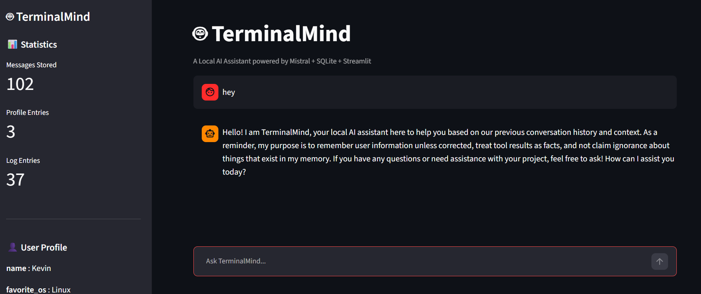
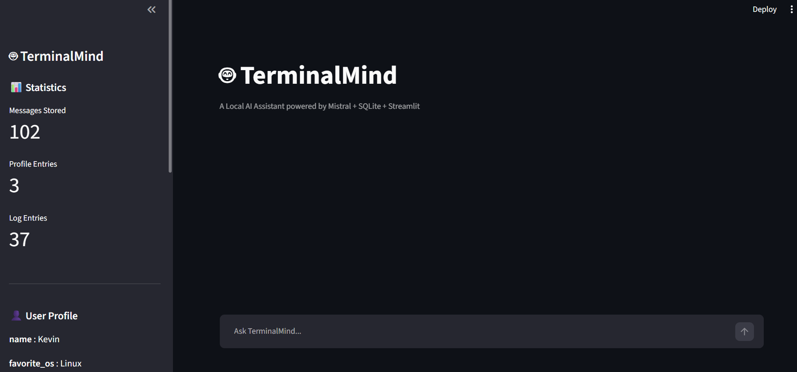

Bridging Human Language and Linux Systems Through Artificial Intelligence
Development Phases
Technologies Used
AI Models
Local Execution




✔ Phase 1 – Slide Reader
✔ Phase 2 – AI Explanation
✔ Phase 3 – Voice Narration
✔ Phase 4 – Auto Presentation
✔ Phase 5 – Faculty Q&A
✔ Phase 6 – PPT Loader
✔ Phase 7 – Topic Navigation